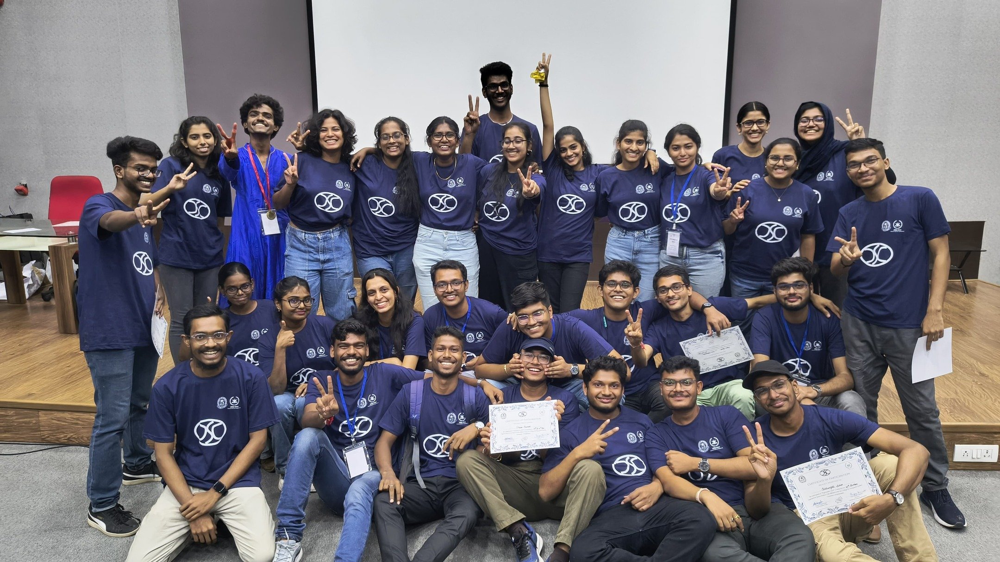
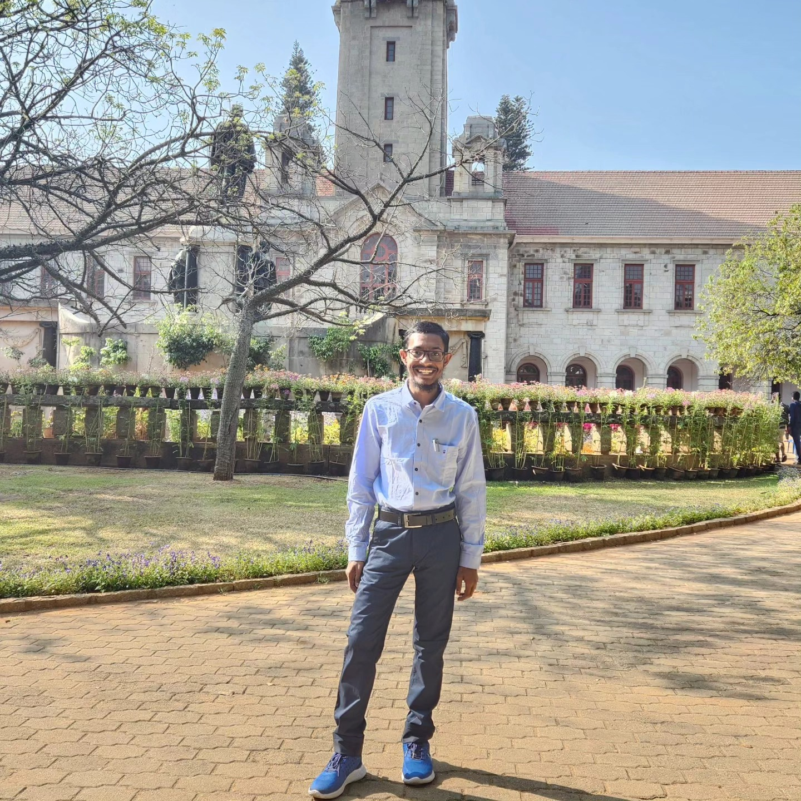
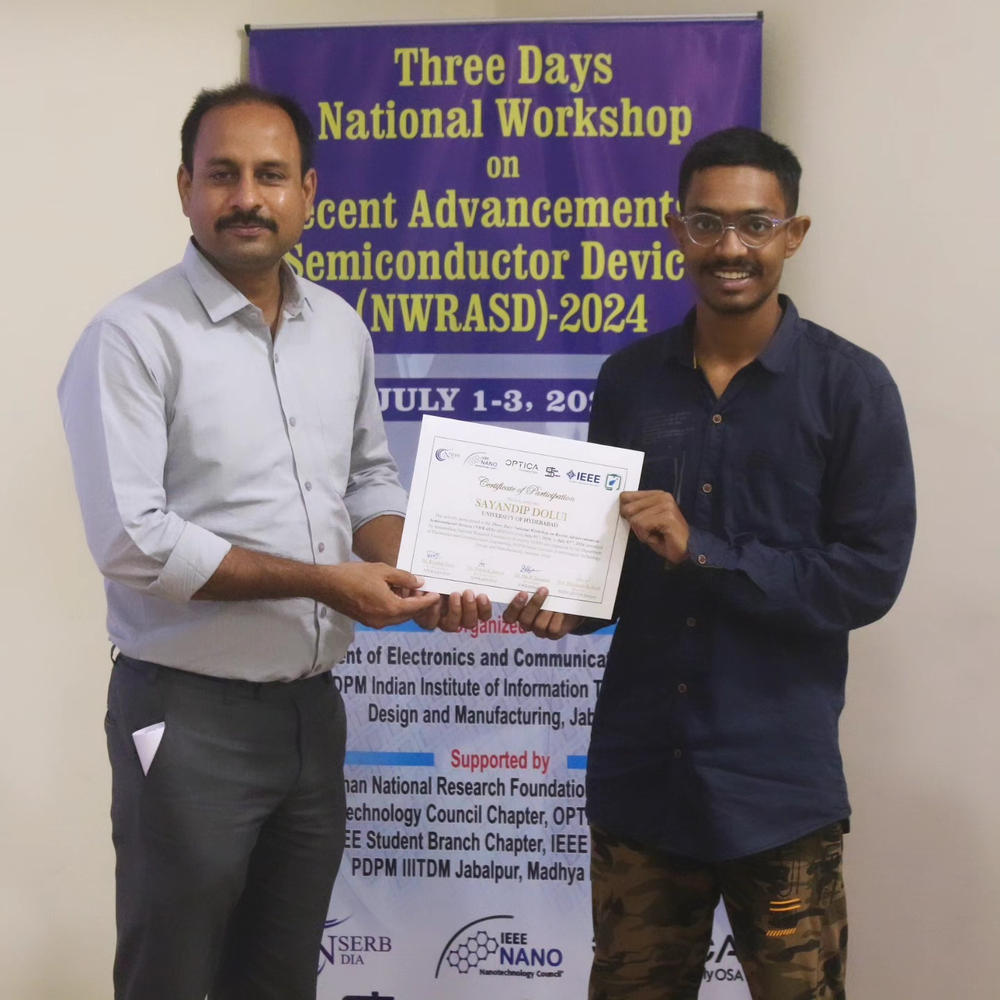
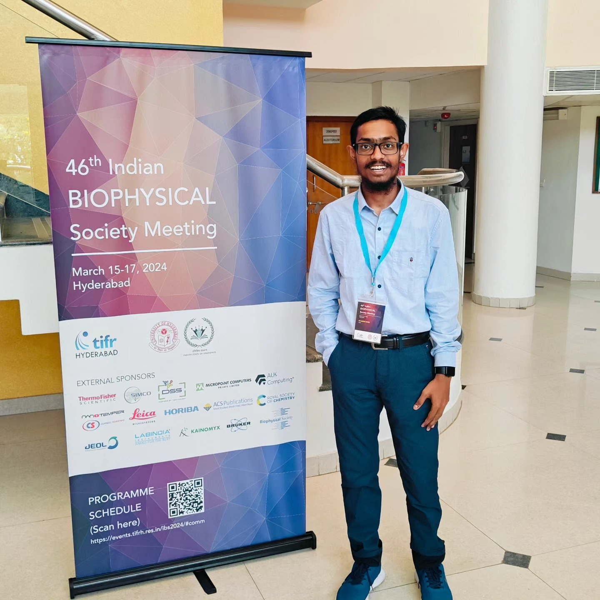
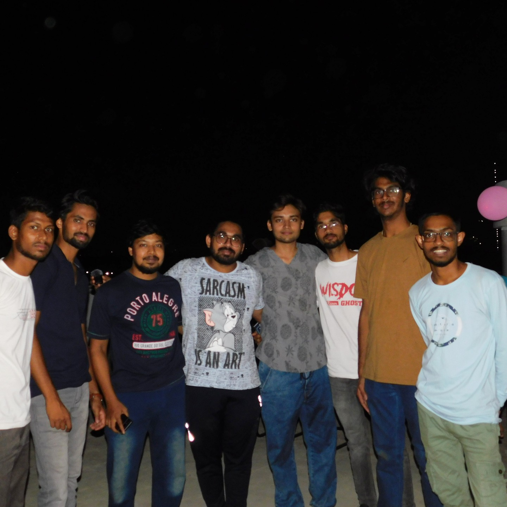
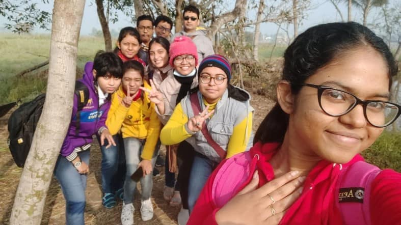
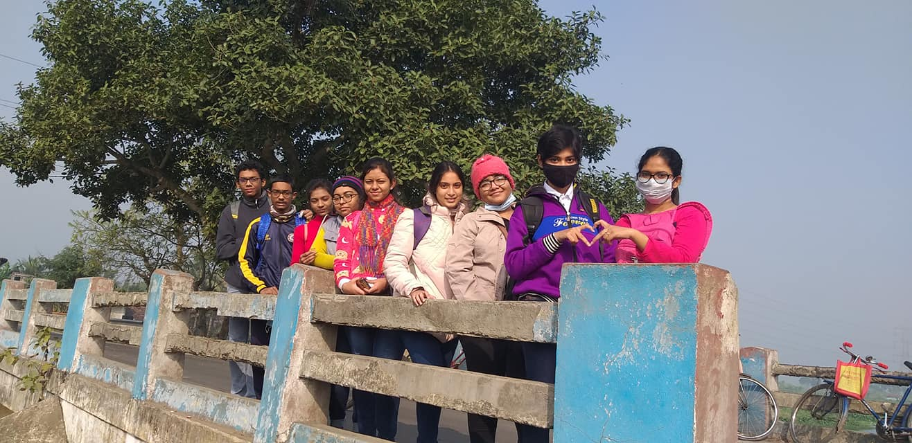

Undergraduate Physics Researcher, University of Hyderabad
About
Physics undergraduate at University of Hyderabad, passionate about quantum materials, Josephson junctions, and interdisciplinary research in physics and nanotechnology.
Biosketch
University of Hyderabad: Undergraduate Education (2023 - present)
You can upload event or lab photos here. For now, this is a placeholder.

Vigyanotsav'24

IISC open day 2024

IIITDM Jabalpur workshop 2024

Indian Biophysics Society Meeting 2024

Zenith Astronomy Club, School of Physics, University of Hyderabad
Foundation Day 2024

Nature Study Session:
With Suanon Sir's, — Choto Belu, Serampore, Hooghly, India (2022).

Group Photo: Nature study trip, Choto Belu, Serampore, Hooghly, India (2022)